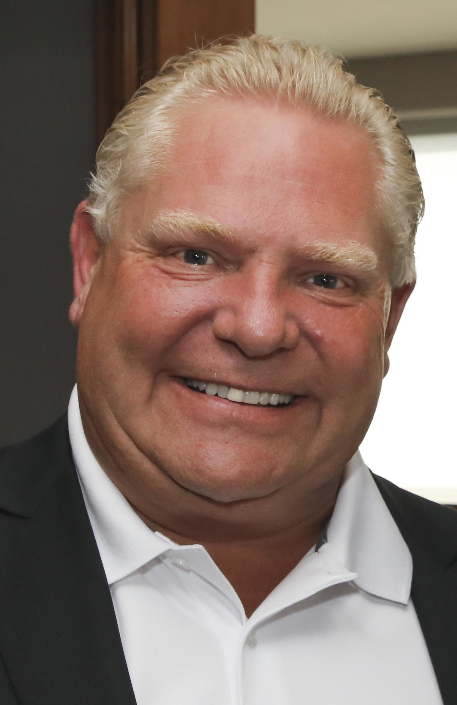
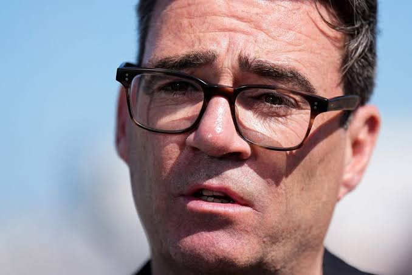

WATER IS OUR FUTURE
Partner with the federal water program to modernize aging pipes, safeguard rural wells, and deliver clean, reliable water to every family, without handing control to private monopolies.
100%COMMUNITIES
CONNECTED
CONNECTED
William Douglas Davis will defend our water, protect our paychecks, and keep Kalahooska united, without surrendering our future to the extremes.

Davis will preserve what works, fix what doesn’t, and judge every policy by one test: does it help Kalahooskans build a better life?
Partner with the federal water program to modernize aging pipes, safeguard rural wells, and deliver clean, reliable water to every family, without handing control to private monopolies.
Stop wasteful bureaucracy, hold the line on family taxes, and back small businesses that create good jobs right here at home.
BUILD PROSPERITYProtect choice, property, and local enterprise. Davis believes strong public services and free citizens can, and must, stand together.
DEFEND FREEDOMThe Burnham agenda would gamble with Kalahooska’s unity, prosperity, and peace. We cannot afford that risk.

BURNHAM’SEvery door knocked. Every neighbor reached. Every vote earned.
BECOME A VOLUNTEER CONTACT THE CAMPAIGN